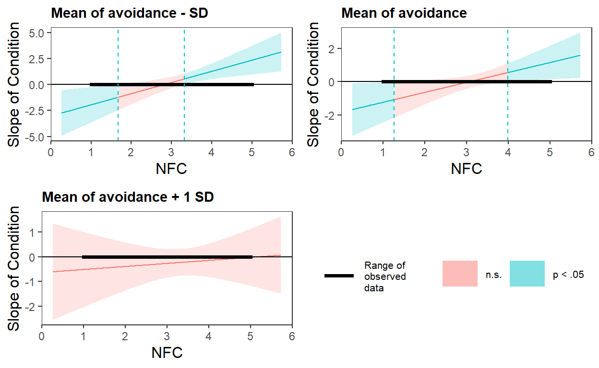
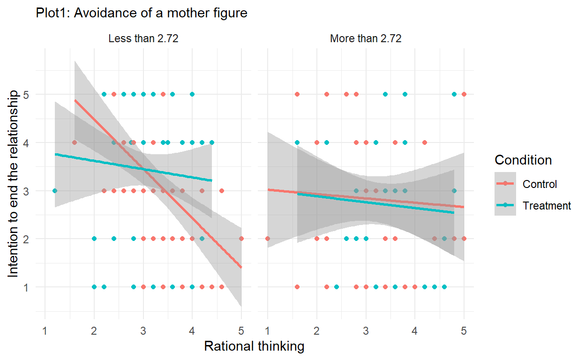
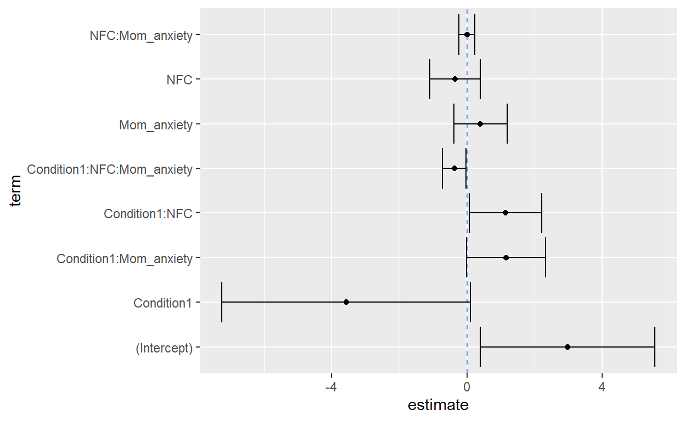
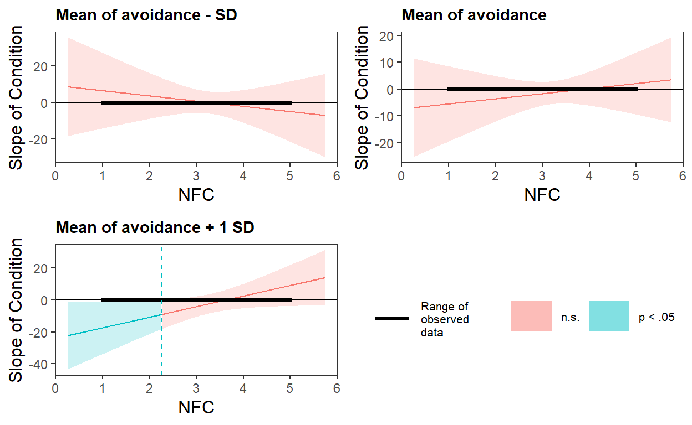
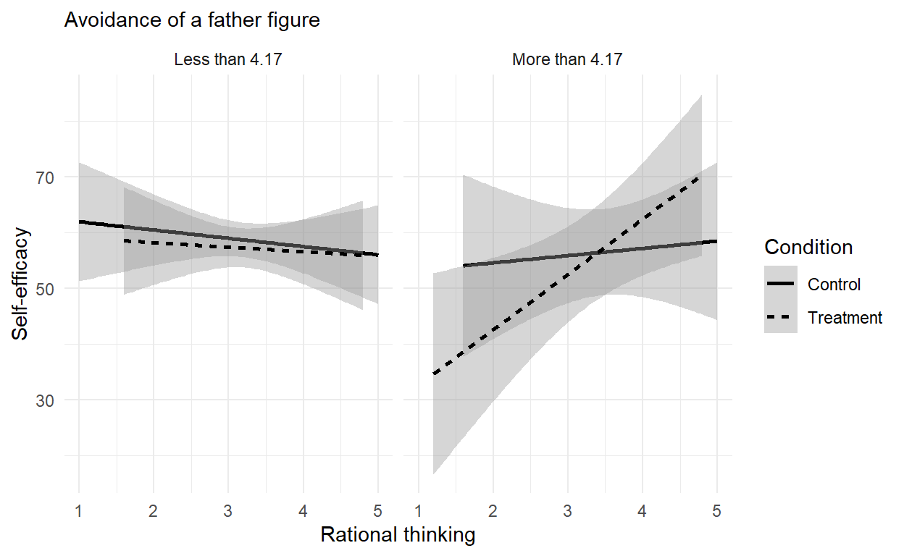
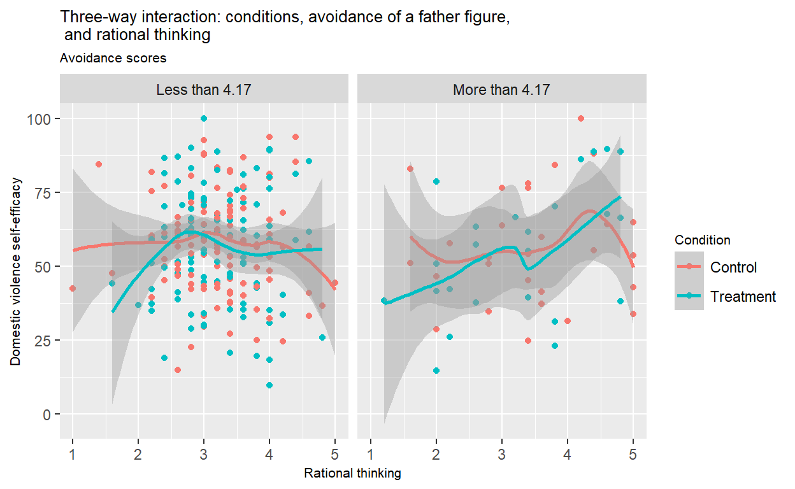
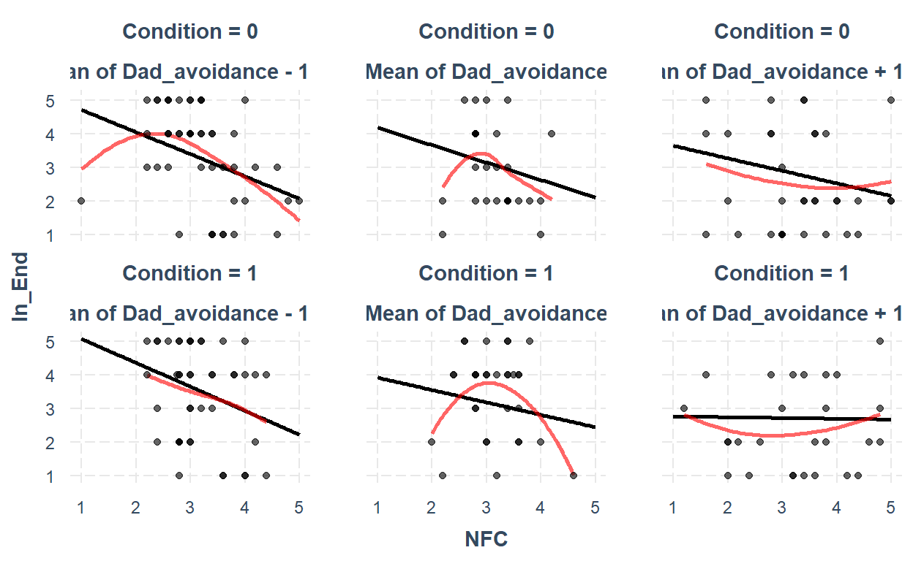
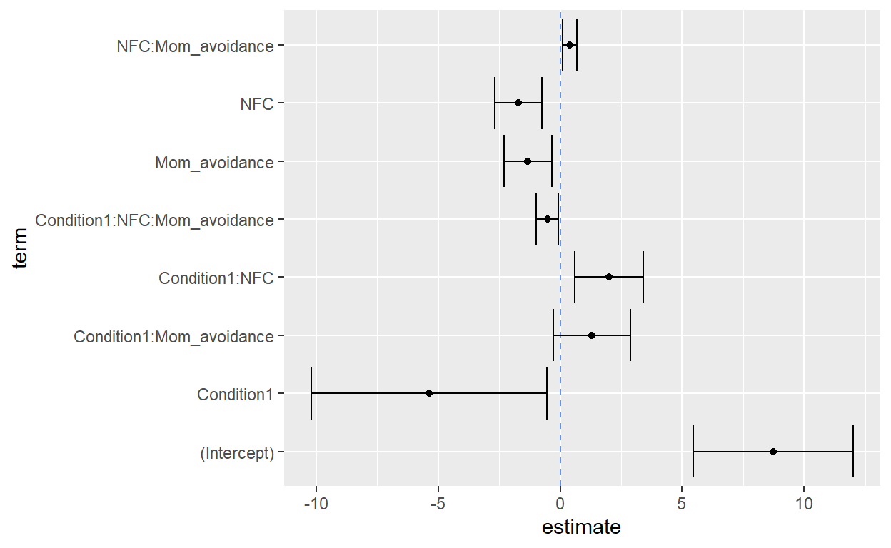
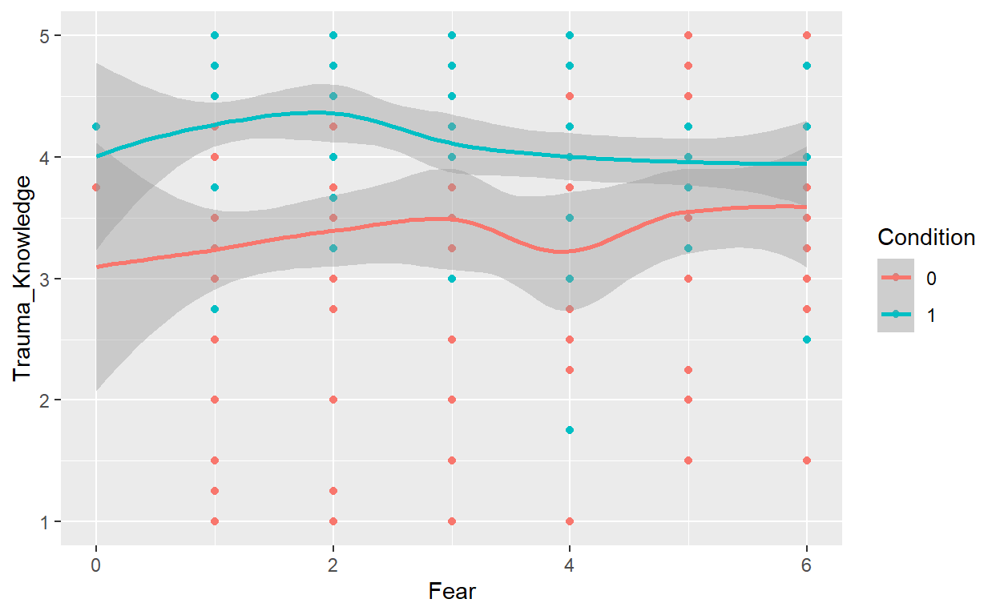

The current research project examines the effects of trauma-informed messages on attitudes towards domestic violence among battered women with childhood trauma. The moderating roles of psychosocial traits (i.e., borderline personality traits (BPD), adverse childhood experiences (ACE), fear of an abusive partner, attachment styles towards parents) and information processing patterns (i.e., emotional versus rational) are examined.
Below I provide tables and visuals of significant model examples from the dataset.
Table 1 represents the three-ways interaction effects of conditions(trauma-informed messages vs. control)x NFC (i.e., rational information processing)x avoidance attachment towards a mother figure.
| Dependent variable: | |||||||
| Trauma knowledge | Self-efficacy | Internal tools | Tradeoffs | Social support | Self-compassion | Leaving intention | |
| OLS | OLS | OLS | OLS | OLS | OLS | OLS | |
| (1) | (2) | (3) | (4) | (5) | (6) | (7) | |
| Constant | 5.49*** (0.92) | 82.10*** (18.78) | 5.34*** (0.66) | 4.29*** (1.03) | 6.08*** (0.80) | 3.74*** (0.59) | 8.73*** (1.66) |
| Condition | -1.24 (1.32) | 19.77 (27.08) | -0.89 (0.94) | 0.85 (1.49) | -0.45 (1.16) | -0.28 (0.85) | -5.37** (2.45) |
| NFC | -0.58** (0.27) | -5.28 (5.53) | -0.36* (0.19) | -0.19 (0.30) | -0.50** (0.24) | -0.16 (0.17) | -1.70*** (0.49) |
| Avoidance | -0.64** (0.28) | -7.01 (5.74) | -0.68*** (0.20) | 0.03 (0.32) | -0.96*** (0.24) | -0.36** (0.18) | -1.32*** (0.50) |
| Condition*Avoidance | 0.58 (0.42) | -12.66 (8.56) | 0.24 (0.30) | -0.43 (0.47) | 0.37 (0.37) | 0.04 (0.27) | 1.30 (0.81) |
| NFC*Avoidance | 0.18** (0.08) | 1.44 (1.70) | 0.18*** (0.06) | -0.07 (0.09) | 0.21*** (0.07) | 0.09 (0.05) | 0.39*** (0.15) |
| Condition*NFC | 0.58 (0.39) | -6.08 (7.97) | 0.22 (0.28) | -0.33 (0.44) | 0.06 (0.34) | 0.13 (0.25) | 2.00*** (0.72) |
| ConditionNFCAvoidance | -0.17 (0.12) | 3.70 (2.49) | -0.06 (0.09) | 0.16 (0.14) | -0.09 (0.11) | -0.04 (0.08) | -0.52** (0.23) |
| Observations | 288 | 287 | 287 | 287 | 287 | 287 | 218 |
| R2 | 0.17 | 0.05 | 0.10 | 0.08 | 0.12 | 0.08 | 0.11 |
| Adjusted R2 | 0.15 | 0.03 | 0.08 | 0.05 | 0.10 | 0.05 | 0.08 |
| Residual Std. Error | 0.88 | 18.06 | 0.63 | 0.99 | 0.77 | 0.56 | 1.35 |
| F Statistic | 8.29*** | 2.31** | 4.53*** | 3.31*** | 5.69*** | 3.27*** | 3.87*** |
| Note: | p<0.1; p<0.05; p<0.01 | ||||||
According to Table 1, the three-way interaction effect on leaving intention is significant. Let’s visualize the interaction.
The first step before visualizing the interaction is to identify a significant region of avoidance attachment moderated by the interaction of two focal predictors: condition and rational thinking (i.e., NFC = Need for Cognition).
Below are the Johnson-neyman results, basic interaction visual from probe_interaction, and the Johnson-Neyman plot:
¦ While Mom_avoidance (2nd moderator) = 1.80 ¦
JOHNSON-NEYMAN INTERVAL
When NFC is OUTSIDE the interval [2.04, 3.23], the slope of
Condition is p < .1.
Note: The range of observed values of NFC is [1.00, 5.00]
SIMPLE SLOPES ANALYSIS
Slope of Condition when NFC = 2.47 (- 1 SD):
Est. S.E. t val. p
------- ------ -------- ------
-0.38 0.38 -1.00 0.32
Slope of Condition when NFC = 3.20 (Mean):
Est. S.E. t val. p
------ ------ -------- ------
0.40 0.26 1.51 0.13
Slope of Condition when NFC = 3.93 (+ 1 SD):
Est. S.E. t val. p
------ ------ -------- ------
1.18 0.37 3.23 0.00
¦ While Mom_avoidance (2nd moderator) = 2.72 ¦
JOHNSON-NEYMAN INTERVAL
When NFC is OUTSIDE the interval [2.13, 3.70], the slope of
Condition is p < .1.
Note: The range of observed values of NFC is [1.00, 5.00]
SIMPLE SLOPES ANALYSIS
Slope of Condition when NFC = 2.47 (- 1 SD):
Est. S.E. t val. p
------- ------ -------- ------
-0.36 0.27 -1.33 0.18
Slope of Condition when NFC = 3.20 (Mean):
Est. S.E. t val. p
------ ------ -------- ------
0.08 0.19 0.40 0.69
Slope of Condition when NFC = 3.93 (+ 1 SD):
Est. S.E. t val. p
------ ------ -------- ------
0.51 0.27 1.92 0.06
¦ While Mom_avoidance (2nd moderator) = 3.63 ¦
JOHNSON-NEYMAN INTERVAL
The Johnson-Neyman interval could not be found. Is the p value
for your interaction term below the specified alpha?
SIMPLE SLOPES ANALYSIS
Slope of Condition when NFC = 2.47 (- 1 SD):
Est. S.E. t val. p
------- ------ -------- ------
-0.34 0.38 -0.89 0.38
Slope of Condition when NFC = 3.20 (Mean):
Est. S.E. t val. p
------- ------ -------- ------
-0.25 0.28 -0.90 0.37
Slope of Condition when NFC = 3.93 (+ 1 SD):
Est. S.E. t val. p
------- ------ -------- ------
-0.16 0.33 -0.48 0.63

According to the johnson neyman output above, the interaction between condition and rational thinking is significant among women scored less than the mean (2.72) of avoidance attachment. We will use ggplot to visualized the three-way interaction according to the significant region.
[1] "[0,2.72]" "(2.72,5]"
The plot (method = “lm” for geom_smooth) indicates a seemingly significant relationship between condition and rational thinking at the level of avoidance less than 2.72. What if we don’t force linear modeling?

The visual does not look linear but rather cubic relationships. Let’s visualize using the interaction package to see whether the cubic assumption is true.

Testing linearity reveals that at the level of avoidance less than 1SD and more than 1SD, the relationship betweeb the treatment condition and NFC seems curvilinear, in consistent to Plot 2. We can say that there is a significant interaction between condition, rational thinking, and avoidance and the relationship is likely not linear. Informed by the Johnson-Neyman analysis, among women scored on mom_avoidance lower than 2.72, the treatment condition works better in predicting women’s leaving intention especially when the level of rational thinking is higher than 1 SD of its mean (about 3.97).
Let’ see some estimates and stardard errors and the visualize uncertainty of the model.
# A tibble: 8 x 7
term estimate std.error statistic p.value conf.low conf.high
<chr> <dbl> <dbl> <dbl> <dbl> <dbl> <dbl>
1 (Intercept) 8.73 1.66 5.25 3.66e-7 5.45 12.0
2 Condition1 -5.37 2.45 -2.19 2.97e-2 -10.2 -0.536
3 NFC -1.70 0.489 -3.48 6.14e-4 -2.67 -0.737
4 Mom_avoida~ -1.32 0.499 -2.65 8.69e-3 -2.31 -0.338
5 Condition1~ 1.30 0.805 1.62 1.07e-1 -0.286 2.89
6 NFC:Mom_av~ 0.392 0.150 2.61 9.77e-3 0.0955 0.688
7 Condition1~ 2.00 0.719 2.79 5.79e-3 0.587 3.42
8 Condition1~ -0.517 0.230 -2.25 2.57e-2 -0.971 -0.0635
According to the uncertainty plot, the stadard errors of the three-way interaction is close to zero, indicating small effect sizes. The main effect of condition is the highest with a quite wide range of standard errors.
There is a high chance that the model is mis-specified or maybe not linear as I suspected at the beigning. Let’s model the relationship in a non-linear pattern.
Call:
lm(formula = In_End ~ Condition * Mom_avoidance * poly(NFC, 2),
data = data)
Residuals:
Min 1Q Median 3Q Max
-2.8694 -1.0092 0.2152 0.9451 2.8096
Coefficients:
Estimate Std. Error t value
(Intercept) 3.22244 0.42001 7.672
Condition1 1.08850 0.61618 1.767
Mom_avoidance -0.05221 0.14710 -0.355
poly(NFC, 2)1 -20.80505 6.61848 -3.143
poly(NFC, 2)2 0.19126 6.61261 0.029
Condition1:Mom_avoidance -0.37690 0.21974 -1.715
Condition1:poly(NFC, 2)1 20.48248 10.17027 2.014
Condition1:poly(NFC, 2)2 -3.67861 9.38075 -0.392
Mom_avoidance:poly(NFC, 2)1 4.74075 2.08975 2.269
Mom_avoidance:poly(NFC, 2)2 -0.13057 1.86932 -0.070
Condition1:Mom_avoidance:poly(NFC, 2)1 -5.01912 3.27613 -1.532
Condition1:Mom_avoidance:poly(NFC, 2)2 0.33206 2.94477 0.113
Pr(>|t|)
(Intercept) 6.62e-13 ***
Condition1 0.07879 .
Mom_avoidance 0.72301
poly(NFC, 2)1 0.00192 **
poly(NFC, 2)2 0.97695
Condition1:Mom_avoidance 0.08781 .
Condition1:poly(NFC, 2)1 0.04531 *
Condition1:poly(NFC, 2)2 0.69536
Mom_avoidance:poly(NFC, 2)1 0.02433 *
Mom_avoidance:poly(NFC, 2)2 0.94438
Condition1:Mom_avoidance:poly(NFC, 2)1 0.12705
Condition1:Mom_avoidance:poly(NFC, 2)2 0.91033
---
Signif. codes: 0 '***' 0.001 '**' 0.01 '*' 0.05 '.' 0.1 ' ' 1
Residual standard error: 1.355 on 206 degrees of freedom
(71 observations deleted due to missingness)
Multiple R-squared: 0.1188, Adjusted R-squared: 0.0717
F-statistic: 2.524 on 11 and 206 DF, p-value: 0.005272The non-linear model is also not significant. In conclusion, the interaction between condition, avoidance attachment towards a mother figure, and rational thinking in predicting leaving intention is small in effect size. The relationship might be non-linear but the sample size could be too small for sufficient power analysis to detect the non-linear interaction.
Let’s move on to the next model; testing the moderating roles of rational thinking pattern and anxiety attachment towards a mother figure.
| Dependent variable: | |||||||
| Trauma knowledge | Self-efficacy | Internal tools | Tradeoffs | Social support | Self-compassion | Leaving intention | |
| OLS | OLS | OLS | OLS | OLS | OLS | OLS | |
| (1) | (2) | (3) | (4) | (5) | (6) | (7) | |
| Constant | 1.36* (0.78) | 33.02** (16.35) | 2.79*** (0.57) | 2.43*** (0.85) | 2.36*** (0.72) | 1.71*** (0.51) | 2.99** (1.31) |
| Condition | 2.75** (1.10) | 8.84 (23.15) | -0.37 (0.81) | 1.15 (1.21) | 1.49 (1.03) | -0.15 (0.72) | -3.57* (1.87) |
| NFC | 0.49** (0.22) | 8.14* (4.71) | 0.38** (0.16) | 0.02 (0.25) | 0.41** (0.21) | 0.41*** (0.15) | -0.36 (0.38) |
| Anxiety | 0.70*** (0.24) | 9.54* (4.99) | 0.18 (0.17) | 0.60** (0.26) | 0.26 (0.22) | 0.32** (0.16) | 0.40 (0.40) |
| Condition*Anxiety | -0.67* (0.35) | -8.35 (7.37) | 0.10 (0.26) | -0.53 (0.39) | -0.24 (0.33) | 0.06 (0.23) | 1.16* (0.59) |
| NFC*Anxiety | -0.17** (0.07) | -3.11** (1.47) | -0.07 (0.05) | -0.11 (0.08) | -0.08 (0.07) | -0.11** (0.05) | 0.01 (0.12) |
| Condition*NFC | -0.40 (0.32) | -4.39 (6.69) | 0.02 (0.23) | -0.35 (0.35) | -0.53* (0.30) | -0.04 (0.21) | 1.14** (0.55) |
| ConditionNFCAnxiety | 0.13 (0.10) | 3.07 (2.19) | 0.003 (0.08) | 0.16 (0.11) | 0.10 (0.10) | 0.004 (0.07) | -0.37** (0.18) |
| Observations | 288 | 287 | 287 | 287 | 287 | 287 | 218 |
| R2 | 0.20 | 0.03 | 0.07 | 0.14 | 0.03 | 0.06 | 0.19 |
| Adjusted R2 | 0.18 | 0.01 | 0.05 | 0.12 | 0.01 | 0.04 | 0.17 |
| Residual Std. Error | 0.87 | 18.30 | 0.64 | 0.96 | 0.81 | 0.57 | 1.28 |
| F Statistic | 9.80*** | 1.21 | 3.03*** | 6.70*** | 1.25 | 2.59** | 7.25*** |
| Note: | p<0.1; p<0.05; p<0.01 | ||||||
Like the avoidance model previously, the three-way interaction effect is significant on leaving intention only. Let’s visualize the interaction.
Just like what we did earlier, the first step before visualizing the interaction is to identify a significant region of anxiety attachment moderated by the interaction of two focal predictors: condition and rational thinking (i.e., NFC = Need for Cognition).
Below are the Johnson-neyman results, basic interaction visual from probe_interaction, and the Johnson-Neyman plot:
¦ While Mom_anxiety (2nd moderator) = 1.68 (M ¦
JOHNSON-NEYMAN INTERVAL
When NFC is OUTSIDE the interval [-9.01, 4.55], the slope of
Condition is p < .1.
Note: The range of observed values of NFC is [1.00, 5.00]
SIMPLE SLOPES ANALYSIS
Slope of Condition when NFC = 2.47 (- 1 SD):
Est. S.E. t val. p
------- ------ -------- ------
-0.33 0.36 -0.92 0.36
Slope of Condition when NFC = 3.20 (Mean):
Est. S.E. t val. p
------ ------ -------- ------
0.05 0.25 0.19 0.85
Slope of Condition when NFC = 3.93 (+ 1 SD):
Est. S.E. t val. p
------ ------ -------- ------
0.43 0.31 1.37 0.17
¦ While Mom_anxiety (2nd moderator) = 2.93 (M ¦
JOHNSON-NEYMAN INTERVAL
The Johnson-Neyman interval could not be found. Is the p value
for your interaction term below the specified alpha?
SIMPLE SLOPES ANALYSIS
Slope of Condition when NFC = 2.47 (- 1 SD):
Est. S.E. t val. p
------- ------ -------- ------
-0.02 0.25 -0.06 0.95
Slope of Condition when NFC = 3.20 (Mean):
Est. S.E. t val. p
------ ------ -------- ------
0.03 0.18 0.16 0.87
Slope of Condition when NFC = 3.93 (+ 1 SD):
Est. S.E. t val. p
------ ------ -------- ------
0.07 0.25 0.29 0.77
¦ While Mom_anxiety (2nd moderator) = 4.18 (M ¦
JOHNSON-NEYMAN INTERVAL
The Johnson-Neyman interval could not be found. Is the p value
for your interaction term below the specified alpha?
SIMPLE SLOPES ANALYSIS
Slope of Condition when NFC = 2.47 (- 1 SD):
Est. S.E. t val. p
------ ------ -------- ------
0.30 0.34 0.88 0.38
Slope of Condition when NFC = 3.20 (Mean):
Est. S.E. t val. p
------ ------ -------- ------
0.01 0.25 0.03 0.97
Slope of Condition when NFC = 3.93 (+ 1 SD):
Est. S.E. t val. p
------- ------ -------- ------
-0.28 0.37 -0.76 0.45

The Johnson-Neyman analysis indicates none significant region of the three-way interactions. There is no need to visualize the interaction. Let’s do some uncertainty check of the model.
# A tibble: 8 x 7
term estimate std.error statistic p.value conf.low conf.high
<chr> <dbl> <dbl> <dbl> <dbl> <dbl> <dbl>
1 (Intercept) 2.99 1.31 2.28 0.0237 0.403 5.57
2 Condition1 -3.57 1.87 -1.91 0.0573 -7.26 0.111
3 NFC -0.355 0.379 -0.937 0.350 -1.10 0.392
4 Mom_anxiety 0.402 0.400 1.01 0.315 -0.385 1.19
5 Condition1:~ 1.16 0.595 1.95 0.0519 -0.00986 2.33
6 NFC:Mom_anx~ 0.00512 0.119 0.0429 0.966 -0.230 0.240
7 Condition1:~ 1.14 0.546 2.09 0.0381 0.0631 2.22
8 Condition1:~ -0.368 0.177 -2.08 0.0392 -0.718 -0.0184
According to the uncertainty, the stadard errors of all estimates cross or close to zero, indicating that the model is not well speficifed. In other words, there are no valuable interaction effects of condition, anxious attachment, and ratianal thinking and their main effects.
In addition to attachment towards a mother figure, literature pointed out that attachment towards a father figure may influence battered women’s attitudes towards abusive relationships. Let’s explore the moderating roles of avoidance attachment towards a father figure and rational thinking pattern.
| Dependent variable: | |||||||
| Trauma knowledge | Self-efficacy | Internal tools | Tradeoffs | Social support | Self-compassion | Leaving intention | |
| OLS | OLS | OLS | OLS | OLS | OLS | OLS | |
| (1) | (2) | (3) | (4) | (5) | (6) | (7) | |
| Constant | 3.42*** (0.88) | 75.97*** (17.94) | 3.17*** (0.62) | 7.07*** (0.98) | 4.34*** (0.76) | 2.98*** (0.55) | 6.71*** (1.48) |
| Condition | -0.16 (1.43) | 40.88 (29.19) | 2.67*** (1.01) | -2.38 (1.59) | 3.12** (1.24) | 2.07** (0.90) | 2.05 (2.50) |
| NFC | 0.01 (0.25) | -5.45 (5.17) | 0.30* (0.18) | -1.06*** (0.28) | 0.05 (0.22) | 0.13 (0.16) | -0.94** (0.44) |
| Avoidance | 0.02 (0.25) | -4.63 (5.08) | 0.01 (0.18) | -0.83*** (0.28) | -0.41* (0.22) | -0.12 (0.16) | -0.65 (0.41) |
| Condition*Avoidance | 0.22 (0.40) | -15.61* (8.08) | -0.78*** (0.28) | 0.63 (0.44) | -0.60* (0.34) | -0.58** (0.25) | -0.80 (0.69) |
| NFC*Avoidance | -0.01 (0.07) | 1.42 (1.43) | -0.03 (0.05) | 0.21*** (0.08) | 0.04 (0.06) | -0.004 (0.04) | 0.14 (0.12) |
| Condition*NFC | 0.19 (0.42) | -11.85 (8.61) | -0.80*** (0.30) | 0.70 (0.47) | -1.07*** (0.37) | -0.71*** (0.26) | -0.45 (0.74) |
| ConditionNFCAvoidance | -0.04 (0.11) | 4.43* (2.34) | 0.23*** (0.08) | -0.18 (0.13) | 0.22** (0.10) | 0.19*** (0.07) | 0.20 (0.20) |
| Observations | 287 | 286 | 286 | 286 | 286 | 286 | 217 |
| R2 | 0.16 | 0.05 | 0.11 | 0.09 | 0.13 | 0.10 | 0.11 |
| Adjusted R2 | 0.14 | 0.03 | 0.09 | 0.07 | 0.11 | 0.08 | 0.08 |
| Residual Std. Error | 0.89 | 18.13 | 0.63 | 0.99 | 0.77 | 0.56 | 1.35 |
| F Statistic | 7.46*** | 2.06** | 4.79*** | 3.90*** | 5.90*** | 4.60*** | 3.57*** |
| Note: | p<0.1; p<0.05; p<0.01 | ||||||
The three-way interaction effects on self-efficacy in leaving an abusive relationship is one of the significant effects. Let’s visualize the interaction. Before doing that, we should indicate a significant region using the Johnson-Neyman technique.
Below are the Johnson-neyman results, basic interaction visual from probe_interaction, and the Johnson-Neyman plot:
¦ While Dad_avoidance (2nd moderator) = 2.03 ¦
JOHNSON-NEYMAN INTERVAL
The Johnson-Neyman interval could not be found. Is the p value
for your interaction term below the specified alpha?
SIMPLE SLOPES ANALYSIS
Slope of Condition when NFC = 2.49 (- 1 SD):
Est. S.E. t val. p
------ ------ -------- ------
2.09 4.55 0.46 0.65
Slope of Condition when NFC = 3.23 (Mean):
Est. S.E. t val. p
------- ------ -------- ------
-0.01 3.05 -0.00 1.00
Slope of Condition when NFC = 3.96 (+ 1 SD):
Est. S.E. t val. p
------- ------ -------- ------
-2.10 4.40 -0.48 0.63
¦ While Dad_avoidance (2nd moderator) = 3.10 ¦
JOHNSON-NEYMAN INTERVAL
The Johnson-Neyman interval could not be found. Is the p value
for your interaction term below the specified alpha?
SIMPLE SLOPES ANALYSIS
Slope of Condition when NFC = 2.49 (- 1 SD):
Est. S.E. t val. p
------- ------ -------- ------
-2.77 3.09 -0.90 0.37
Slope of Condition when NFC = 3.23 (Mean):
Est. S.E. t val. p
------- ------ -------- ------
-1.38 2.15 -0.64 0.52
Slope of Condition when NFC = 3.96 (+ 1 SD):
Est. S.E. t val. p
------ ------ -------- ------
0.01 3.13 0.00 1.00
¦ While Dad_avoidance (2nd moderator) = 4.17 ¦
JOHNSON-NEYMAN INTERVAL
When NFC is OUTSIDE the interval [2.75, 6.19], the slope of
Condition is p < .1.
Note: The range of observed values of NFC is [1.00, 5.00]
SIMPLE SLOPES ANALYSIS
Slope of Condition when NFC = 2.49 (- 1 SD):
Est. S.E. t val. p
------- ------ -------- ------
-7.64 4.10 -1.86 0.06
Slope of Condition when NFC = 3.23 (Mean):
Est. S.E. t val. p
------- ------ -------- ------
-2.76 3.08 -0.90 0.37
Slope of Condition when NFC = 3.96 (+ 1 SD):
Est. S.E. t val. p
------ ------ -------- ------
2.12 3.80 0.56 0.58

The Johnson Neyman analysis indicates significant region of avoidance atatchment at more than 4.17 approximately. Let’s use ggplot to visualize the interaction. This time, I will do a black and whie theme as it’s quite a standard for a peer-reviewed publication.
[1] "Less than 4.17" "More than 4.17"
The plot (method = “lm” for geom_smooth) indicates significant relationship between condition and rational thinking at the level of dad_avoidance more than 4.17. Among participants in that group, trauma-informed messages worked better in predicting self-efficacy when rational thinking is lower than 1 SD (about 2.49).
Let’s see if the data would reflect the same trend if we don’t force linear interaction.

Although the visual does not look linear and more represents cubic relationships, there seems to be an interaction of the conditions and lower level of rational thinking at the avoidance scores more than 4.17, in consistence with the linear model fitting that we did previously.
Let’s visualize using the interaction package to see whether the assumption is true.

The interaction plot reveals seemingly non-linear relationships at three main data points of the avoidance variable. In addition to the significant interactions of condition and rational thinking at the level of avoidance + 1 SD, there seems to be a significant interaction at the lvel of avoidance - 1SD in a non-linear trend. Let’s fit the interactions as a non-linear model.
Call:
lm(formula = DVS_state ~ Condition * NFC * poly(Dad_avoidance,
2), data = NLdata)
Residuals:
Min 1Q Median 3Q Max
-45.021 -13.343 1.032 11.980 45.164
Coefficients:
Estimate Std. Error t value
(Intercept) 59.7705 7.6643 7.799
Condition1 -7.1355 10.7779 -0.662
NFC -0.4322 2.3563 -0.183
poly(Dad_avoidance, 2)1 -78.2931 92.0290 -0.851
poly(Dad_avoidance, 2)2 -20.5739 94.5582 -0.218
Condition1:NFC 1.8614 3.3072 0.563
Condition1:poly(Dad_avoidance, 2)1 -364.2243 151.7578 -2.400
Condition1:poly(Dad_avoidance, 2)2 254.3888 160.6116 1.584
NFC:poly(Dad_avoidance, 2)1 24.1449 25.9068 0.932
NFC:poly(Dad_avoidance, 2)2 -2.2484 27.3882 -0.082
Condition1:NFC:poly(Dad_avoidance, 2)1 104.3101 44.0294 2.369
Condition1:NFC:poly(Dad_avoidance, 2)2 -73.7134 47.0361 -1.567
Pr(>|t|)
(Intercept) 1.32e-13 ***
Condition1 0.5085
NFC 0.8546
poly(Dad_avoidance, 2)1 0.3957
poly(Dad_avoidance, 2)2 0.8279
Condition1:NFC 0.5740
Condition1:poly(Dad_avoidance, 2)1 0.0171 *
Condition1:poly(Dad_avoidance, 2)2 0.1144
NFC:poly(Dad_avoidance, 2)1 0.3522
NFC:poly(Dad_avoidance, 2)2 0.9346
Condition1:NFC:poly(Dad_avoidance, 2)1 0.0185 *
Condition1:NFC:poly(Dad_avoidance, 2)2 0.1182
---
Signif. codes: 0 '***' 0.001 '**' 0.01 '*' 0.05 '.' 0.1 ' ' 1
Residual standard error: 18.07 on 274 degrees of freedom
Multiple R-squared: 0.06859, Adjusted R-squared: 0.0312
F-statistic: 1.834 on 11 and 274 DF, p-value: 0.04837Analysis of Variance Table
Model 1: DVS_state ~ Condition * NFC * poly(Dad_avoidance, 2)
Model 2: DVS_state ~ Condition + NFC + Dad_avoidance + Condition * Dad_avoidance +
Dad_avoidance * NFC + Condition * NFC + Condition * NFC *
Dad_avoidance
Res.Df RSS Df Sum of Sq F Pr(>F)
1 274 89493
2 278 91339 -4 -1845.6 1.4127 0.2299The ANOVA test reveals no significant different across the linear and non-linear model. Thus, we will go with the linear model as it’s more parsimonous.
Let’s check the uncertainty.
# A tibble: 8 x 7
term estimate std.error statistic p.value conf.low conf.high
<chr> <dbl> <dbl> <dbl> <dbl> <dbl> <dbl>
1 (Intercept) 76.0 17.9 4.23 3.11e-5 40.7 111.
2 Condition1 40.9 29.2 1.40 1.63e-1 -16.6 98.3
3 NFC -5.45 5.17 -1.05 2.92e-1 -15.6 4.72
4 Dad_avoidan~ -4.63 5.08 -0.911 3.63e-1 -14.6 5.38
5 Condition1:~ -15.6 8.08 -1.93 5.44e-2 -31.5 0.294
6 NFC:Dad_avo~ 1.42 1.43 0.997 3.19e-1 -1.39 4.24
7 Condition1:~ -11.9 8.61 -1.38 1.70e-1 -28.8 5.09
8 Condition1:~ 4.43 2.34 1.90 5.89e-2 -0.168 9.04 
According to the uncertainty, the stadard errors of the three-way interaction is close to zero, indicating small effect sizes.
Several 3 ways interaction models provided very small effect sizes with high uncertainty and confusing non-linear relationships. Let’s try some two-ways interaction models of the dataset.
Extensive reserch indicates that adverse childhood experiences (ACE) significantly predicted attitudes towards domestic violence. Let’s explore the moderating role of ACE in predicting knowledge about trauma after participants are exposed to trauma-informed messages (versus traditional domestic violence intervention messages)

